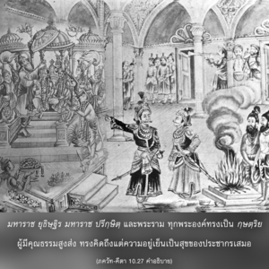

และในหมู่มนุษย์ข้าคือ พระราชา")
ในบรรดาม้ารู้ว่าข้าคือ อุจฺไจห์ศฺรวา กำเนิดออกมาในขณะที่มีการกวนเกษียรสมุทร ในบรรดาพญาช้างสารข้าคือ ไอราวต (ช้างเอราวัณ) และในหมู่มนุษย์ข้าคือ พระราชา
 และเหล่ามาร (อสุระ) ครั้งหนึ่งได้มีการกวนทะเล ผลจากการกวนครั้งนี้ได้ผลิตทั้งน้ำทิพย์และยาพิษ พระศิวะทรงดื่มยาพิษ")

")



เหล่าเทวดา (สาวก) และเหล่ามาร (อสุร) ครั้งหนึ่งได้มีการกวนเกษียรสมุทร ผลจากการกวนในครั้งนั้นได้ผลิตทั้งน้ำทิพย์ และยาพิษ พระศิวะทรงดื่มยาพิษ จากน้ำทิพย์นั้นได้ผลิตหลายชีวิตขึ้นมา ในจำนวนนั้นมีม้า อุจฺไจห์ศฺรวา และมีสัตว์อีกตัวหนึ่งที่ผลิตมาจากน้ำทิพย์นี้คือ พญาช้างชื่อ ไอราวต (ช้างเอราวัณ) เนื่องจากสัตว์สองตัวนี้ผลิตมาจากน้ำทิพย์จึงมีความสำคัญเป็นพิเศษ และทั้งคู่ก็เป็นผู้แทนขององค์กฺฤษฺณ
ในบรรดามนุษย์ กฺษตฺริย คือผู้แทนขององค์กฺฤษฺณ เพราะว่าองค์กฺฤษฺณทรงเป็นผู้บำรุงรักษาจักรวาล กฺษตฺริย ผู้ได้รับการแต่งตั้งจากคุณสมบัติเทพทรงเป็นผู้บำรุงรักษาราชอาณาจักร กฺษตฺริย เช่น มหาราช ยุธิษฺฐิร มหาราช ปรีกฺษิตฺ และพระราม ทุกพระองค์ทรงเป็น กฺษตฺริย ผู้มีคุณธรรมสูงส่ง ทรงคิดถึงแต่ความอยู่เย็นเป็นสุขของประชากรเสมอ ในวรรณกรรมพระเวทพิจารณาว่าพระเจ้าแผ่นดินทรงเป็นผู้แทนขององค์ภควานฺ อย่างไรก็ดี ในยุคนี้จากการทุจริตในหลักธรรมแห่งศาสนาราชาธิปไตยจึงเสื่อมลง และในที่สุดก็ยกเลิกไป ถึงกระนั้น ควรเข้าใจไว้ว่าในอดีตนั้นการอยู่ภายใต้การปกครองของบรรดา กฺษตฺริย ผู้ทรงธรรมประชาชนจะมีความสงบสุขมากกว่า